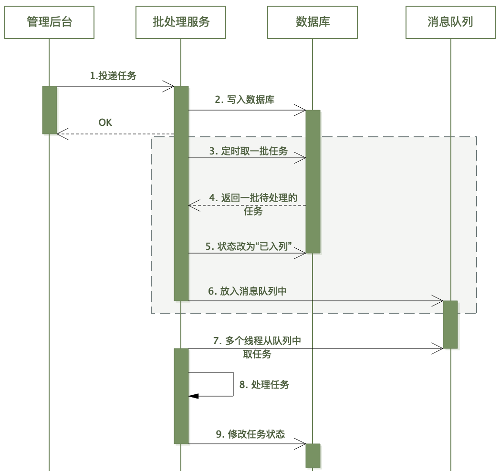
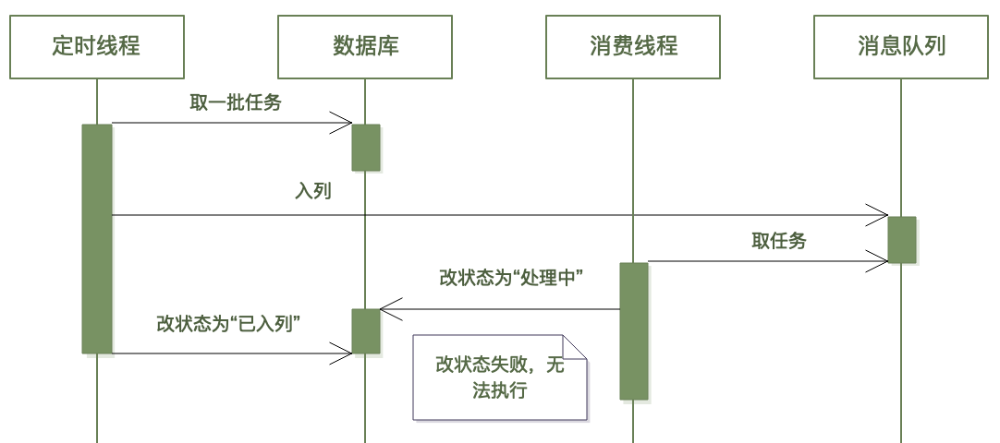
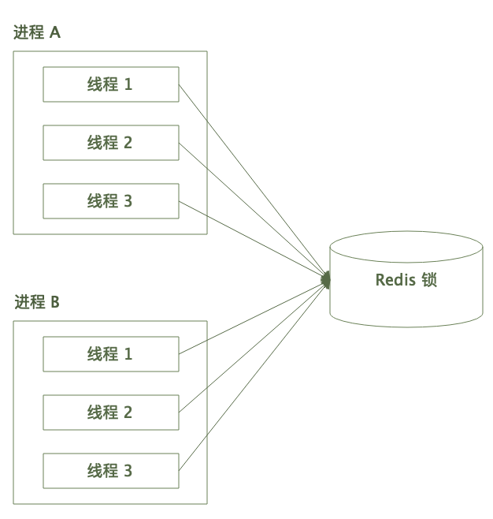
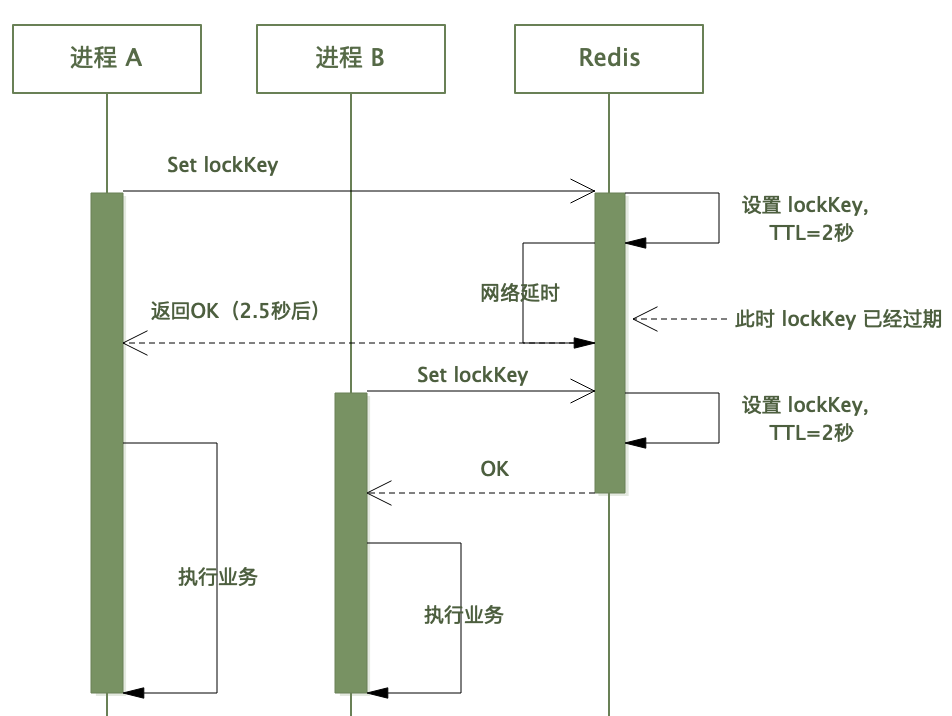

A Progressive Guide to Redis Distributed Locks (And When Not to Use Them)
The Scenario
Imagine you're running a batch processing service. You have multiple instances of the service running in production, and every minute a scheduler pushes a batch of tasks into a message queue. Each instance picks up tasks and processes them.
There's just one problem: the scheduler is dumb. It doesn't know which tasks are already in the queue. So it might push the same task multiple times, and multiple instances might pick up the same task, leading to duplicate processing.
How do you prevent this? You need a way for the instances to coordinate — a way to say "I'm working on task X, don't touch it." In a single-process world, you'd use a local lock. But with multiple processes across multiple machines, you need a distributed lock.


First Attempt: SETNX

Redis provides a perfect primitive for this: SETNX (SET if Not eXists). The idea is simple:
SETNX lock:task:123 "instance-1"If the key doesn't exist, it gets set and the command returns 1 — you acquired the lock. If the key already exists, the command returns 0 — someone else has the lock. When you're done processing, you delete the key to release the lock.
This works... until it doesn't.
First Failure: The Lock Never Expires
What happens if your instance crashes after acquiring the lock but before releasing it? The key stays in Redis forever. No other instance can ever acquire the lock for this task. The task is stuck in limbo.
The fix: Add a TTL (time-to-live) to the key so it automatically expires after some time.
SET lock:task:123 "instance-1" EX 30 NXThis is an atomic operation: set the key with a 30-second expiry, but only if it doesn't already exist. Now even if the instance crashes, the lock will be released after 30 seconds.
Problem solved, right? Not quite.
Second Failure: Unlocking Someone Else's Lock
Consider this timeline:
- Instance A acquires the lock with a 30-second TTL.
- Instance A takes 35 seconds to process the task (maybe there's a GC pause, or the network is slow).
- At 30 seconds, the lock expires automatically.

- Instance B comes along and acquires the same lock.
- Instance A finishes and deletes the lock — but it just deleted Instance B's lock!
- Instance C can now also acquire the lock. Both B and C are processing the same task.
The problem is that Instance A deleted a lock it no longer owned.
The fix: Give each lock a unique owner identifier. Only the owner can delete the lock.
// Acquire: use a random value as the owner ID
SET lock:task:123 "owner-uuid-abc" EX 30 NX
// Release: check ownership before deleting
if redis.get("lock:task:123") == "owner-uuid-abc" then
redis.del("lock:task:123")
endBut wait — this check-then-delete is not atomic. Between the GET and the DEL, the lock could expire and be acquired by someone else. We need to make it atomic.
The real fix: Use a Lua script. Redis executes Lua scripts atomically — no other command can run in between.
local val = redis.call('GET', KEYS[1])
if val == ARGV[1] then
return redis.call('DEL', KEYS[1])
else
return 0
endThis script checks the value and deletes the key in a single atomic operation. Now you can only delete your own lock.
Optimization 1: Lock Waiting with Retry
So far, our lock acquisition is non-blocking: if the lock is held, you get 0 and that's it. But in many scenarios, you want to wait for the lock to become available.
The simplest approach is polling with retry:
func acquireLock(key, value, ttl, retryCount, retryDelay) {
for i := 0; i < retryCount; i++ {
if redis.Set(key, value, ttl, "NX") {
return true
}
time.Sleep(retryDelay)
}
return false
}You try to acquire the lock. If you fail, you wait a bit and try again, up to retryCount times. The retry delay should be randomized (with jitter) to avoid thundering herd problems when multiple instances are all retrying at the same interval.
Optimization 2: Lock Timeout Detection
Here's a subtle issue: what if acquiring the lock itself takes longer than the TTL?
Imagine:
- Instance A tries to acquire the lock. It's held by someone else.
- Instance A retries for 40 seconds before the lock becomes available and it acquires it.
- But the TTL is only 30 seconds.
- Instance A starts processing, but the lock will expire in 30 seconds — before the task is done.
The lock is effectively useless because it expires before the work is complete.
The fix: Record the time when you start trying to acquire the lock. After acquisition, check if the elapsed time exceeds the TTL. If so, don't proceed — the lock is unreliable.
startTime := time.Now()
acquired := acquireLock(key, value, ttl, retryCount, retryDelay)
if !acquired {
return errFailed
}
if time.Since(startTime) > ttl {
releaseLock(key, value)
return errLockExpired
}This prevents you from proceeding with a lock that's about to expire.
Optimization 3: Watchdog / TTL Refresh
The TTL creates a dilemma:
- If the TTL is too short, the lock expires before the task completes.
- If the TTL is too long, a crashed instance forces others to wait a long time.
The ideal solution: set a reasonable initial TTL, but periodically extend it while you're still working. This is the watchdog pattern.
// After acquiring the lock, start a goroutine to refresh the TTL
go func() {
ticker := time.NewTicker(ttl / 3)
defer ticker.Stop()
for {
select {
case <-ticker.C:
if !isDone {
redis.Expire(key, ttl)
} else {
return
}
case <-ctx.Done():
return
}
}
}()The watchdog renews the TTL every ttl/3 seconds (or some fraction of the TTL). When the task completes, the watchdog stops and the lock is released normally. If the instance crashes, the watchdog stops too, and the lock expires naturally.
This is exactly how Redisson (the popular Java Redis client) implements its lock watchdog. The default TTL is 30 seconds, and the watchdog renews it every 10 seconds.
What About Reentrancy?
A reentrant lock is one that can be acquired multiple times by the same owner without blocking. Java's ReentrantLock works this way. Do you need this for distributed locks?
In practice, you probably don't need reentrancy. If your code structure requires the same lock to be acquired twice in the same call chain, it's usually a sign that:
- The lock scope is too broad. Narrow it down.
- The function design is tangled. Separate the locked and unlocked code paths.
- You're using a lock when you should be using a different synchronization mechanism.
If you really need it, you can implement it with a Redis hash that tracks the owner and a count:
HSET lock:task:123 owner "uuid" count 1 // first acquisition
HINCRBY lock:task:123 count 1 // reentrant acquisition
HINCRBY lock:task:123 count -1 // release (delete when count reaches 0)But seriously, think hard about whether you need this. Most of the time, you don't.
Not a Silver Bullet: When to Use Lua Instead
Distributed locks are often overused. Consider the classic seckill (flash sale) scenario: you have 100 items in inventory, and thousands of users try to buy at the same time. The naive approach:
// WRONG: using a distributed lock for inventory deduction
lock("inventory:item:123")
stock = redis.get("stock:item:123")
if stock > 0 then
redis.decr("stock:item:123")
create_order()
end
unlock("inventory:item:123")This works, but it's terrible for performance. Every request has to wait for the lock, creating a massive bottleneck.
The better approach: use a Lua script to make the check-and-decrement atomic.
local stock = tonumber(redis.call('GET', KEYS[1]))
if stock > 0 then
redis.call('DECR', KEYS[1])
return 1 -- success
else
return 0 -- sold out
endThe Lua script runs atomically in Redis — no lock needed. This is simpler, faster, and more reliable than a distributed lock.
Rule of thumb: If you can express the entire critical section as a single Redis operation (or Lua script), do that instead of using a distributed lock. Distributed locks are for coordinating actions outside of Redis — like preventing multiple instances from processing the same task.
Summary: Building a Production-Ready Distributed Lock
Let's recap the evolution:
- SETNX — basic lock, but no expiry. Crashed instances hold locks forever.
- SET ... EX NX — add TTL. Locks auto-expire, but now you might unlock someone else's lock.
- Unique owner + Lua unlock — only the owner can release the lock. But tasks might outlive the TTL.
- Watchdog — periodically refresh the TTL. Now the lock lasts as long as the owner is alive.
- Lock waiting + timeout detection — handle contention gracefully and detect stale acquisitions.
Compared to a local lock, a distributed lock adds:
- Network latency for every acquire/release
- TTL management and watchdog complexity
- Ownership tracking
- Failure modes you don't have with local locks (Redis down, network partition, clock skew)
Don't reach for a distributed lock unless you truly need cross-process coordination. And when you do, use a battle-tested library like Redisson (Java), Redlock (multiple languages), or go-redsync (Go) rather than rolling your own.
Idempotency vs. Distributed Locks
Finally, a note on a common confusion. Distributed locks and idempotency solve different problems:
- Distributed locks prevent concurrent execution. They ensure that only one process does a thing at a time.
- Idempotency ensures that doing the same thing multiple times has the same effect as doing it once. It handles retries, duplicate messages, and replays.
In our batch processing example, the distributed lock prevents two instances from processing the same task simultaneously. But if Instance A processes the task, crashes, and Instance B retries the task, the lock won't help — you need idempotency for that (e.g., a unique constraint in the database, or an idempotency key).
Often, you need both. The lock handles the concurrent case; idempotency handles the sequential-duplicate case. Understanding the difference is key to designing robust distributed systems.